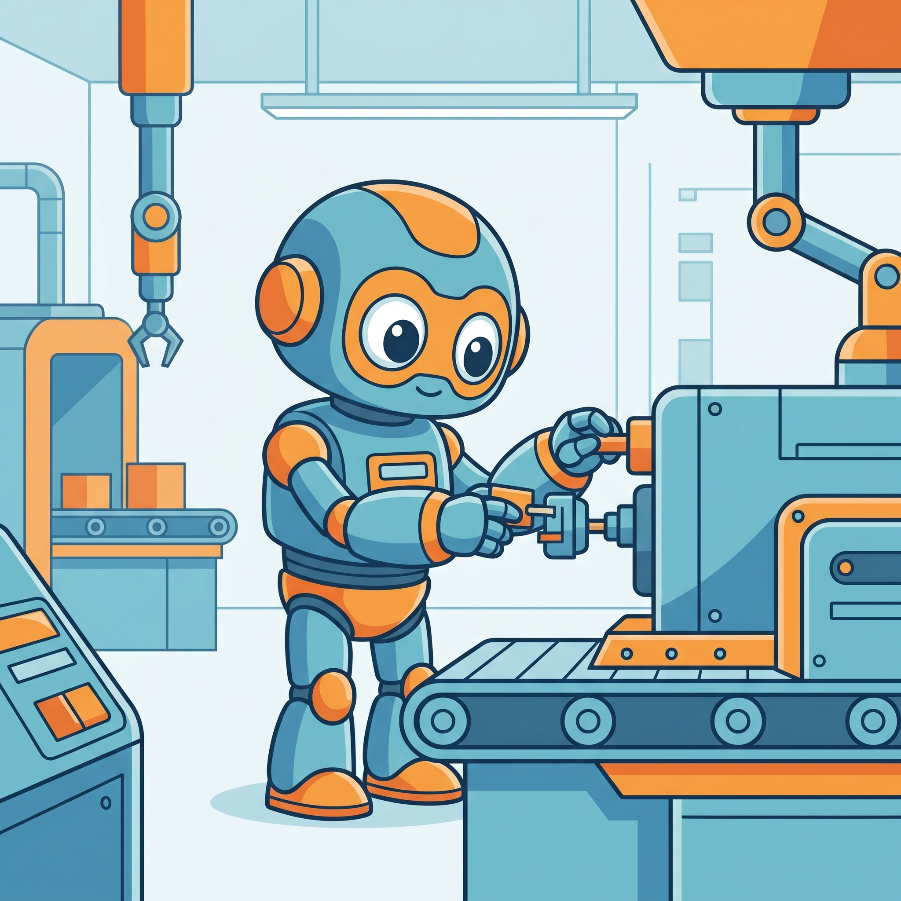
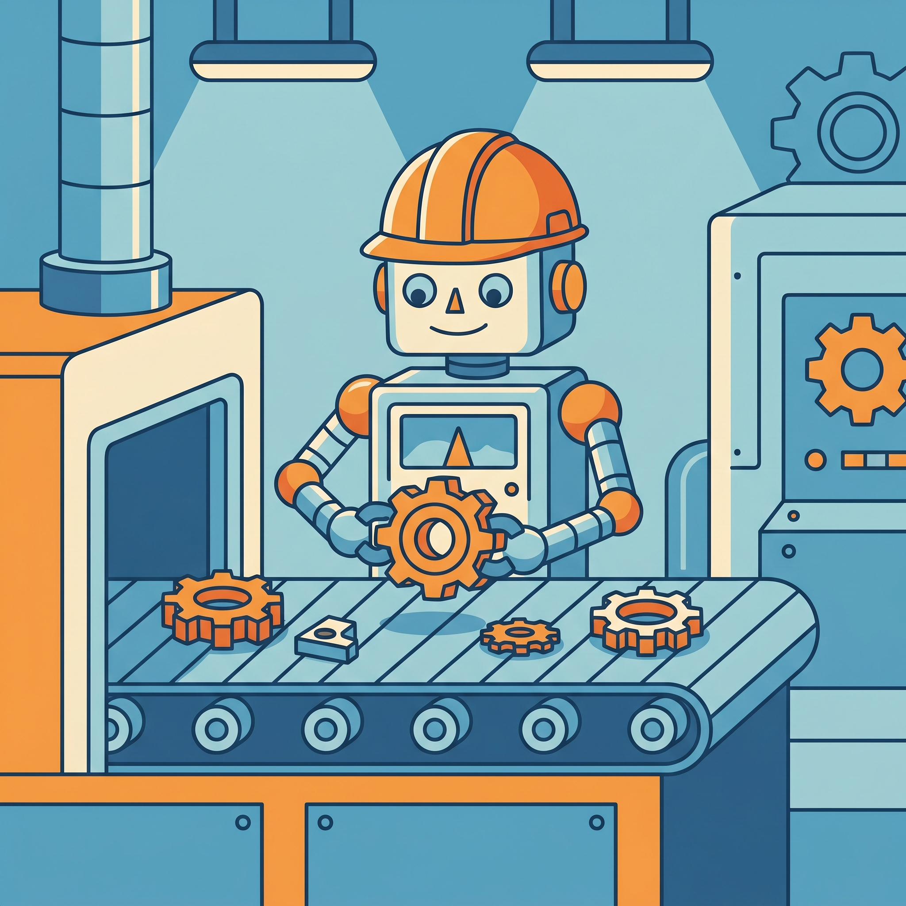
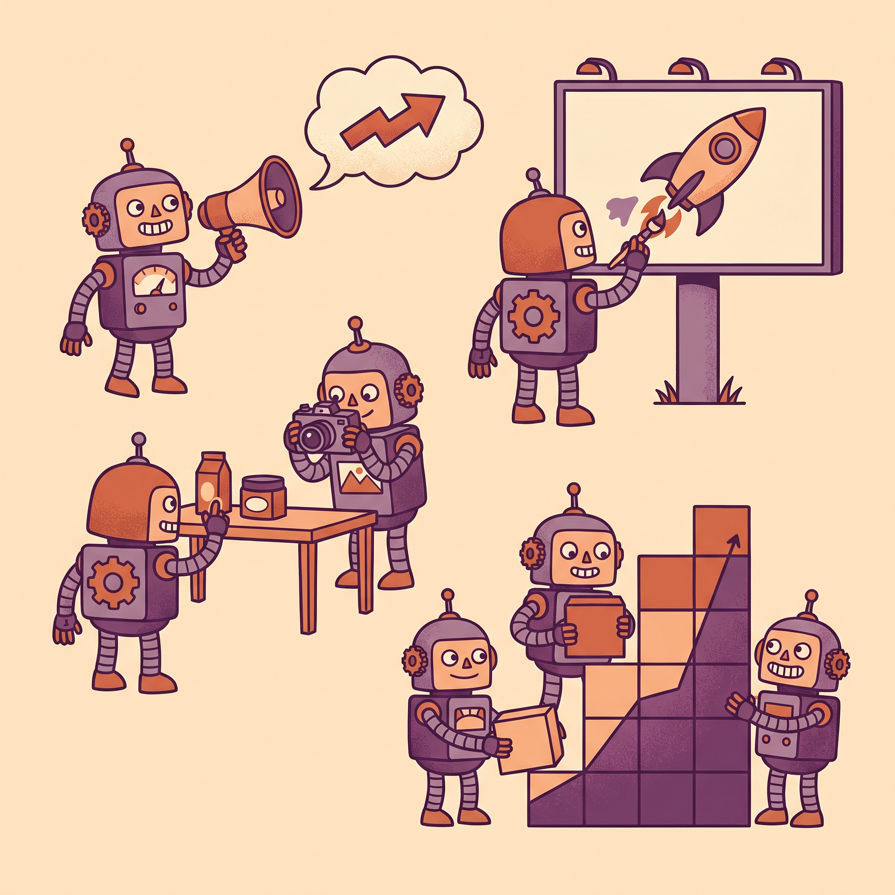
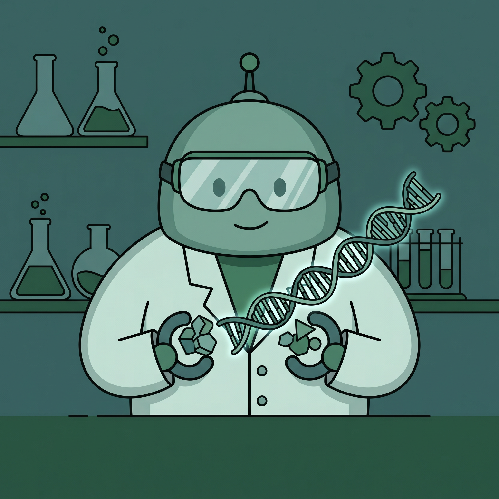
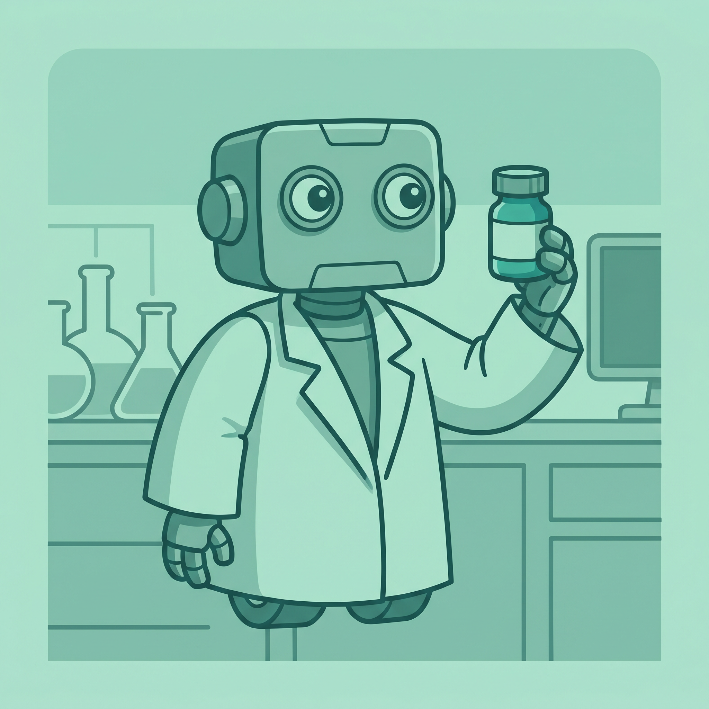
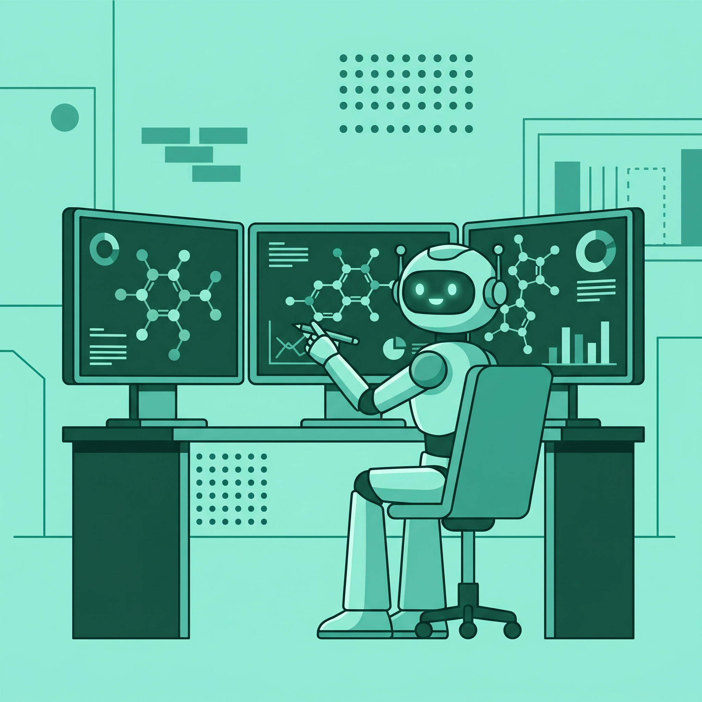
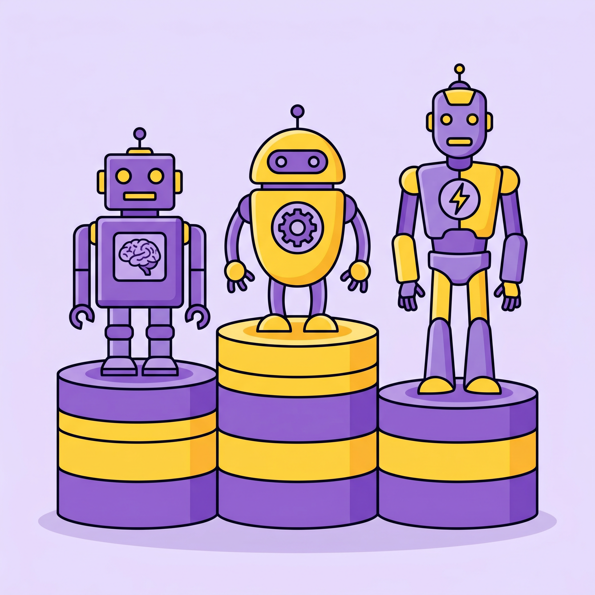
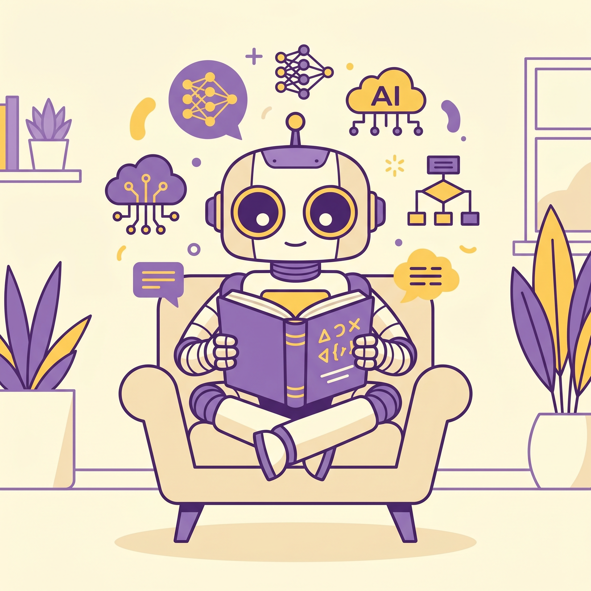
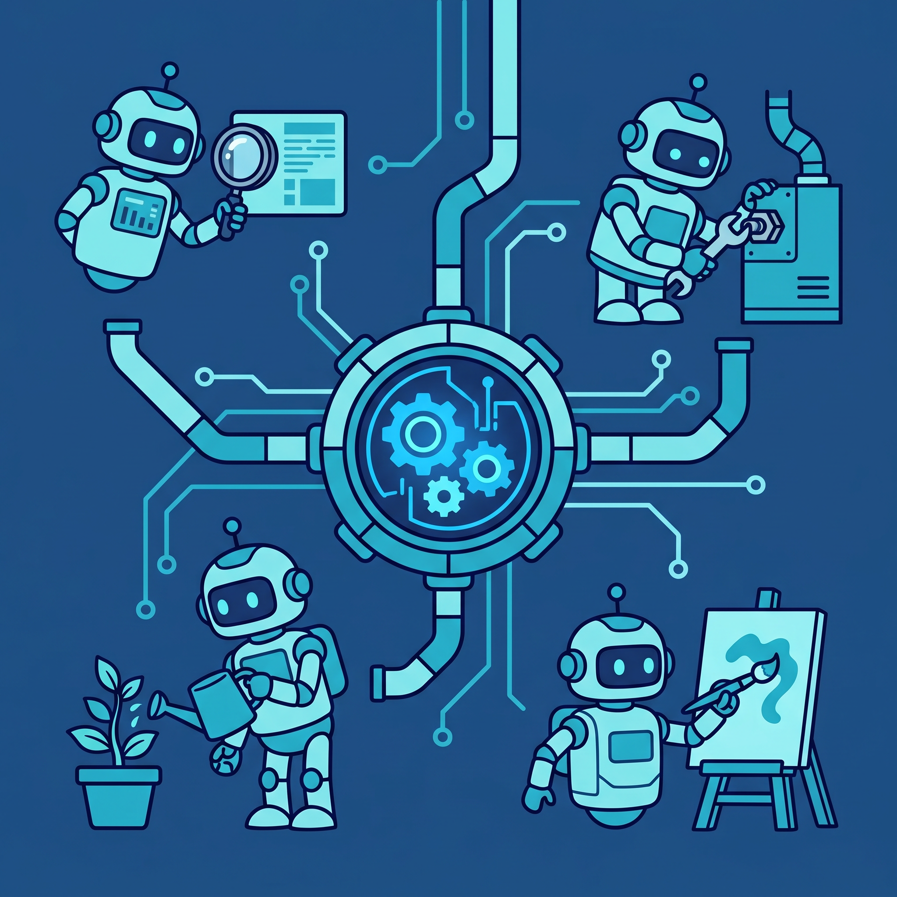
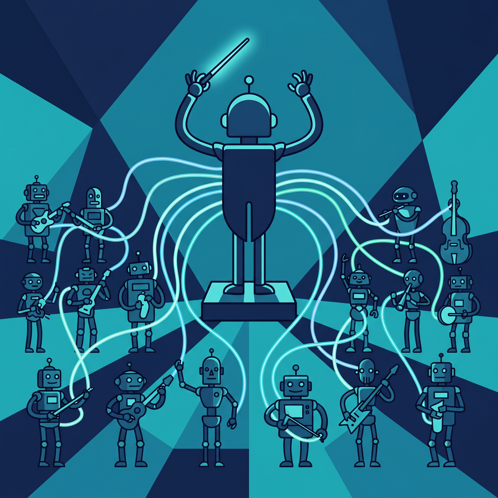

产业政策
AI+ 并联驱动具身智能人形机器人新跨越
来源：天津日报 · 2026年05月05日
天津作为全国先进制造研发基地，正加速布局具身智能新赛道。具身智能是国家明确的未来产业发展方向，正成为全球人工智能与机器人产业竞逐的战略制高点。这意味着中国制造业正从传统自动化向智能化跃迁，人形机器人将成为工厂的"新员工"。
查看原文 →具身智能人形机器人走进天津工厂产线；OpenAI发布GPT-5.5引爆Agentic Coding；斯坦福Nature重磅研究AI造出前所未有蛋白质；国产大模型DeepSeek公布多模态技术范式；谷歌云推出Agents CLI简化智能体开发全流程。

天津作为全国先进制造研发基地，正加速布局具身智能新赛道。具身智能是国家明确的未来产业发展方向，正成为全球人工智能与机器人产业竞逐的战略制高点。这意味着中国制造业正从传统自动化向智能化跃迁，人形机器人将成为工厂的"新员工"。
查看原文 →2025年人形机器人从实验室走向现实，行业迈入量产交付与商业化落地阶段。优必选全尺寸具身智能人形机器人收入达8.2亿元，标志着行业跨越"死亡谷"进入规模化阶段。这对制造业意味着劳动力结构将发生根本性变革。
查看原文 →
拓斯达具身智能机器人研发团队荣膺"全国工人先锋号"，其研发的机器人已真正走进工厂产线。这标志着中国企业在具身智能领域的技术突破得到国家认可，人形机器人正从概念走向实际生产应用。
查看原文 →2026年4月最后一周，全球AI大厂罕见地同时发力Agentic Coding（智能体编程）。OpenAI发布GPT-5.5，让AI能够自主编写代码，这对营销行业意味着内容生产效率将指数级提升，品牌需要重新思考如何在AI时代建立差异化价值。
查看原文 →数说故事在D3智慧增长大会发布从OpenClaw到Agent OS的完整产品线，重构品牌在AI时代的组织智能。这意味着企业营销正从人工决策转向AI驱动的智能决策，营销团队的工作方式将彻底改变。
查看原文 →
4月16日到24日短短8天，Anthropic Claude Opus 4.7等多款重磅AI产品密集发布，发布节奏之密、信息密度之高、资金体量之大堪称惊心动魄。这对出海企业意味着AI工具的迭代速度远超预期，必须快速适应才能保持竞争力。
查看原文 →
斯坦福团队用AI从零设计出16种噬菌体，内含地球前所未有的蛋白质，研究成果登上Nature。这是AI创造生命的一大步，意味着人类可以设计自然界不存在的生物分子，为新药研发和合成生物学开辟全新路径。
查看原文 →
继Rentosertib口服疗法在IIa期研究获得积极结果后，吸入制剂也获得临床试验批件。这是全球首款AI设计的药物进入临床阶段，标志着AI制药从理论走向实践，有望大幅缩短新药研发周期。
查看原文 →
创新药研发面临"双十定律"：研发周期超十年、投入超十亿美元、成功率不足10%。广东AI制药企业正通过技术突破和资本支持闯关"死亡谷"。这意味着AI正在改写制药行业的经济模型，有望打破传统困境。
查看原文 →• AlphaFold 3 - 蛋白质结构预测最新版本 GitHub | HuggingFace
• ESM-3 - Meta开源蛋白质语言模型 GitHub | HuggingFace
• Protenix - 开源蛋白质结构预测工具 GitHub
• MoleculeNet - 分子机器学习基准数据集 GitHub
研究人员李博杰提出"不可压缩知识探针"评测框架，仅通过黑盒API调用逆向估算LLM参数规模，引发社区热议。这揭示了大模型评测的新思路，也让模型厂商的"参数保密"策略面临挑战，透明度成为行业新焦点。
查看原文 →
DeepSeek公布多模态技术范式，采用"视觉原语思考"方法。这是国产大模型在多模态领域的重要突破，意味着AI不仅能理解文字，还能像人类一样理解图像，为视觉AI应用打开新空间。
查看原文 →
对比分析智谱GLM5.1、Kimi K2.6、Qwen3.6、混元HY-3.0-preview和DeepSeek V4五款国产开源大模型的性能及适用场景。这为企业选择合适的大模型提供了参考，国产模型正在形成百花齐放的竞争格局。
查看原文 →
谷歌云智能体平台推出Agents CLI，实现从本地原型设计到生产部署的无缝衔接。这解决了智能体开发中的常见难题，意味着开发者可以更快速地构建和部署AI智能体，降低了技术门槛。
查看原文 →
Cloudflare发布Code Mode驱动的MCP服务器，使AI智能体能够以极低Token消耗与大型API交互。这解决了智能体应用的成本痛点，意味着企业可以更经济地部署大规模智能体系统。
查看原文 →蚂蚁数科在数字中国建设峰会发布DataX智能体数据生态平台，通过接入MCP协议和DTClaw智能体，降低数据接入门槛、缩短价值转化周期。这意味着企业可以更快速地将数据转化为业务价值，数据智能化进入新阶段。
查看原文 →• LangChain - 构建LLM应用的开发框架 GitHub | HuggingFace
• AutoGPT - 自主AI智能体框架 GitHub
• CrewAI - 多智能体协作框架 GitHub
• Model Context Protocol - Anthropic开源的智能体通信协议 GitHub